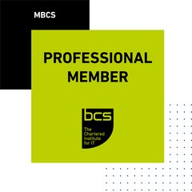

Senior Software Engineer
Hands-on feature work across backend, web, mobile and desktop.
- Laravel · PHP
- MERN stack
- Node.js · Express
- TypeScript
- React
- React Native · Expo
- C# · .NET
- Rust · Tauri
Open to new opportunities
Senior software engineer and solutions architect with 9+ years designing, shipping and running ERP, payments and AI‑assisted products — from the database schema to the deployment pipeline.

Professional MemberBCS, The Chartered Institute for ITAbout
I started in IT support in 2016 and grew through presales, project coordination and operations into leading software development. Since 2022 I've led several teams at once — developers, business analysts, QA engineers, project managers, associates and more than 80 interns — for clients from Canada to New Zealand, while staying hands-on with code, pull requests, deployments and server configuration.
My strongest stack is Laravel, alongside the MERN stack (MongoDB, Express, React, Node.js) and TypeScript. I've built ERP and membership platforms, payment and POS integrations, a commercial desktop Git client with an LLM-powered assistant, and the infrastructure underneath them. I like owning a system end to end: understanding the business, designing the data model, building it, testing it and shipping it.
Good systems start with the data model. I spend time on schemas, rules and edge cases before the first screen is built.
I review pull requests, write features and run deployments alongside the team, and use reviews to help juniors grow.
Tests on the rules that matter, queued work off the request path, and servers configured and secured properly.
Leadership & delivery
Since 2022 I've run several teams and projects in parallel, owning the full lifecycle, from the first stakeholder conversation to the server the system runs on.
Hands-on feature work across backend, web, mobile and desktop.
Data models, module boundaries, integration contracts and security design.
Teams, pull requests, standards, estimates, and growing juniors into contributors.
Schema design, migrations and query tuning for transactional business data.
Provisioning, hardening and running production servers, including on-site at a bank.
Automated builds and releases, with signed desktop and mobile distribution.
Dashed chips are technologies I'm actively building production experience with.
Skills
Actively building hands-on experience with:
Selected work
A cross-section of production systems — banking, ERP, education, products, payments, mobile and AI.
Pintanna Plantation · 2022 – present
A full ERP running the business end to end: warehouse, production, purchasing, sales, point of sale, finance, and an investment and commission platform.
OrecTec · one.orectec.com
A cloud ERP for growing retail and wholesale businesses, sold as self-service SaaS with sign-up, a live demo and a 14-day free trial. The point-of-sale module is live with customers.
OrecTec · commercial product
A standalone Git and GitLab/GitHub client for Windows and macOS, in the spirit of JetBrains IDE version-control tooling.
Plantation Human Development Trust · 2024 – present
A health and welfare information platform for plantation communities, covering people, households, facilities and the estate hierarchy.
Apps Global · Australian market
A tax companion app for individuals and small businesses: job and business income, invoices, property and rental income, investments and travel logs, rolled up into tax and GST reports that can be shared.
Seylan Bank · 2023
A system for tracking the bank's general mail. I built the application, set up the Linux server on-site at the bank, deployed it and maintain it.
Finlays · 2021 – present
Warehouse management for tea operations. Developed the system, set up and configured the Windows server, handled deployment, and have maintained it in production since 2021.
CINEC Campus · MSTI (Merc Marine) · SLICM
Student information and exams portals for three institutes. For CINEC and MSTI I handled project management, business analysis and team leadership, plus server configuration, deployment and ongoing maintenance. For SLICM I built a Laravel SIMS with CyberSource fee payments, and the slicm.lk site on a customised Botble CMS.
OrecTec · Android & iOS
A context-aware wellness companion. Its Context Engine models the user's real routine — office hours, shift rotations, study or freelance blocks — and fits hydration, breathing and sleep nudges into the right windows, including gaps in the phone's calendar.
Sacheeka Fashion
Apparel production tracking: barcoded bundles followed through embroidery, printing, tailoring, QC, dispatch and invoicing — recording who did the work, on which machine, for how long and at what cost.
Chartered Institute of Logistics and Transport
Member records, workplaces and sectors, subscription billing and an events module with category-based ticket pricing and payments. Rewrote and replaced an earlier CodeIgniter member portal.
Apps Technologies · 2021 – 2022
A three-part platform: a React Native mobile app, an Angular web portal, and a serverless Node.js/TypeScript API running on AWS Lambda.
Apps Technologies · 2021 – 2022
Staff attendance by QR code: a mobile app that scans codes on site, backed by a Laravel admin portal for records and reporting.
Benchmark Innovation
A native Android app for checking in-store displays against visual-merchandising standards, with a web admin for plans and results.
BMICH
A cross-platform desktop application for research content, built on Electron with Firebase as the backend.
Orient Insurance
Customer-facing policy renewal portal with a CyberSource payment-gateway integration, including payment validation, retry handling and reporting.
New Zealand client · 2022 – 2024
Built a business-intelligence tool from scratch with interactive analytics and optimised reporting queries, then a WhatsApp Cloud API and Calendly system automating client reminders and scheduling.
OTL Colombo
The company website and a shipment-tracking system integrated with the UPS Shipping API.
Alumex
Designed the app's user interface and built the backend API that powers it, working alongside the mobile front-end developer.
Peace Lily · 2025
Developed and maintained inventory and production systems for a bedding factory and latex processing, managed the sales API to the bedding factory, and built a route planner with live GPS tracking through the trackmycar.lk API.
Apps Technologies
Installed, upgraded and customised the company's RISE CRM: integrated plugins for AWS S3, Twilio SMS, Google Workspace, 2FA and backups, adapted accounting and HR modules to new versions, and built custom admin permissions and proposal templates.
No projects in this category yet.
Custom WordPress themes, Laravel builds and CMS customisation.
…and many more sites, systems and integrations over the years.
Experience
Apps Global · global business division of Apps Technologies
Own architecture and delivery for international client engagements: system design, technology choices and delivery roadmaps.
Apps Technologies
Managed four teams of about 20 people at a time — developers, BAs, QA, project managers and associates — and mentored 80+ interns over the period. Ran full lifecycles for clients in Sri Lanka, Australia, New Zealand, Canada, the UK and Russia: set the technical approach, reviewed and merged pull requests, built features, and ran deployments and server configuration myself.
Peace Lily
Inventory and production systems, the sales API to the bedding factory, and a GPS-tracked fleet route planner.
OrecTec
OrecTec One, a cloud ERP sold as SaaS with its POS module live; Git Lab Desktop, a commercial Git client I built solo; remote projects for a New Zealand client; UPS shipment tracking.
Apps Technologies
Grew from IT support through presales and project coordination into operations management, while running IT and servers for five client organisations on outsourced engagements.
Contact
I'm open to senior engineering and architecture roles, remote or in Sri Lanka. The quickest way to reach me is e-mail — I'll share my full CV and project portfolio on request.